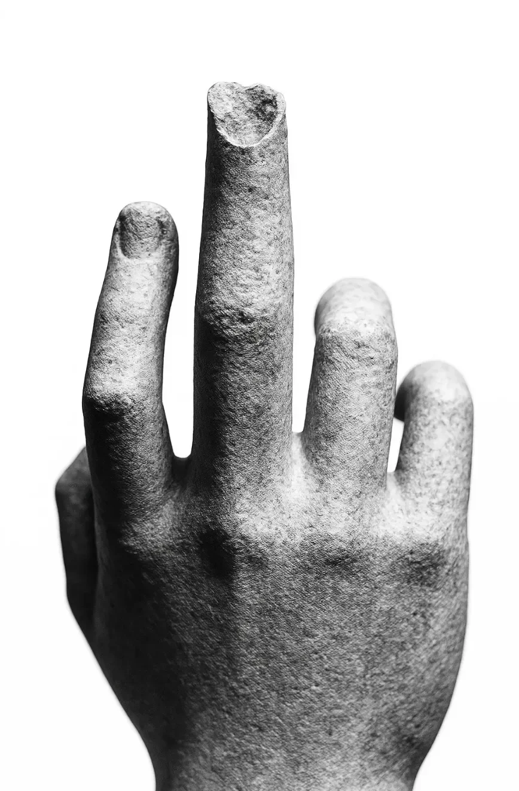

손가락이 구부러지지 않았다.
[The finger wouldn’t bend.]
마리나는 회색빛 아침 햇살 속에서 자신의 오른손을 응시했다. 그녀의 가운데 손가락은 석회암 색깔로 뻣뻣하게 서 있었고, 그 끝부분은 고대 기념물처럼 갈라져 있었다. 그녀는 그것을 침대 시트에 눌러보았다, 차갑고, 감각이 없으며, 돌로 변한 완벽한 살의 모조품이었다.
[Marina stared at her right hand in the gray morning light. Her middle finger stood rigid, the color of limestone, its tip cracked like an ancient monument. She pressed it against the bedsheet, cold, unfeeling, a perfect simulacrum of flesh rendered in stone.]
어제는 약간의 뻣뻣함이었다. 오늘은 석화현상이었다.
[Yesterday, a slight stiffness. Today, petrification.]
“안 돼, 안 돼, 안 돼,” 그녀는 손톱으로 표면을 긁으며 속삭였다. 작은 먼지 구름만 일어날 뿐, 그 이상은 아무것도 없었다.
[No, no, no,“ she whispered, scratching the surface with her thumbnail. A small cloud of dust, nothing more.]
정오가 되자, 변화는 그녀의 손가락 관절까지 도달했다. 응급실 의사는 임상적인 냉정함으로 그녀의 손을 검사하고, 뼈가 있어야 할 자리에 단단한 밀도를 보여주는 엑스레이를 요청한 후 "동료들과 상의하기 위해” 나갔다. 그녀는 몰래 빠져나오기 전에 세 시간을 기다렸는데, 의사들의 속삭이는 대화와 곁눈질은 그들이 답을 가지고 있지 않다는 것을 말해주었다, 단지 호기심만 있을 뿐.
[By noon, the transformation had reached her knuckle. The emergency room doctor had examined her hand with clinical detachment, ordered x-rays that showed solid density where bone should be, then stepped out to “consult colleagues.” She’d waited three hours before slipping out, their whispered conferences and sideways glances telling her they had no answers, only curiosity.]
저녁이 되자 돌은 그녀의 손목까지 올라왔고, 점령된 매 센티미터마다 무게가 늘어났다. 마리나는 지난주 박물관 가이드의 경고를 기억했다: “절대 전시품을 만지지 마세요.” 하지만 그 작은 조각상의 손이 그녀를 부르는 것 같았고, 대리석이라는 표지판에도 불구하고 그 표면은 따뜻했다.
[The stone crawled up her wrist by evening, gaining weight with each centimeter claimed. Marina remembered the museum guide’s warning last week: “Never touch the exhibits.” But the small statue’s hand had seemed to beckon, its surface warm despite the sign claiming it was marble.]
해질녘에는 그녀의 손 전체가 풍화된 화강암 질감을 가지게 되었다. 그녀의 손바닥을 따라 흐르는 더 어두운 광물의 미묘한 결은 조롱하듯 정확하게 그녀의 실제 정맥을 반영했다. 돌이 된 손은 그녀의 손목을 끌어당겼고, 그 엄청난 무게는 그녀의 어깨를 영원히 처지게 만들었다.
[At dusk, her entire hand had the texture of weathered granite. The subtle veins of darker mineral that traced her palm mirrored her actual veins with mocking precision. The stone hand dragged at her wrist, its exquisite weight pulling her shoulder into a perpetual droop.]
“제발,” 그녀는 아무에게도 아닌 듯 속삭였다, “난 기념물이 될 준비가 안 됐어.”
[Please,“ she whispered to no one, "I’m not ready to be a monument.”]
그녀의 언니는 마리나의 암호 같고 눈물 어린 전화를 받고 세 시간을 운전한 후 자정이 지나서 도착했다. 그녀는 이제 팔꿈치까지 돌로 변한 팔을 보고 숨을 들이켰다.
[“We need specialists,” her sister insisted, already scrolling through contacts on her phone. “Someone who understands… unusual conditions.”]
“전문가가 필요해,” 그녀의 언니는 이미 휴대폰 연락처를 스크롤하며 주장했다. “…특이한 상태를 이해하는 사람이 필요해.”
“의사들은 도울 수 없어,” 마리나가 이상하게 차분한 목소리로 말했다. “이건 의학적인 문제가 아니야.”
[“The doctors can’t help,” Marina said, her voice strangely calm. “This isn’t medical.”]
그들은 새벽 시간까지 논쟁했다. 그녀의 언니는 희귀 질환 전문가들에게 전화를 걸었고, 마리나는 점점 더 불가피함을 느끼며 천천히 진행되는 변화를 지켜보았다. 아침이 되어 어깨가 돌로 변하기 시작했을 때, 마리나의 공포는 더 조용한 무언가로 변해 있었다.
[They argued into the small hours, her sister making calls to experts in rare diseases, Marina watching the slow advance with a growing sense of inevitability. By morning, with her shoulder turning to stone, Marina’s panic had transformed into something quieter.]
마리나가 마지막 절박한 병원 방문을 거부했을 때 그녀의 언니는 울었다.
[Her sister wept when Marina refused a last desperate hospital trip.]
“궁금해,” 마리나는 그녀의 쇄골에 도달하는 기어가는 정지 상태를 지켜보며 말했다, “모든 조각상들이 한때는 그저… 멈춰버린 사람들이었던 건 아닐까.”
[“I wonder,” Marina said, watching the creeping stillness reach her collarbone, “if all statues were once people who just… stopped.”]
돌이 그녀의 목을 만졌고, 연인의 손처럼 차가웠다. 마리나는 눈을 감고 그녀의 뼈에 모여드는 세기의 무게를 느꼈다.
[The stone touched her neck, cool as a lover’s hand. Marina closed her eyes, feeling the weight of centuries gathering in her bones.]